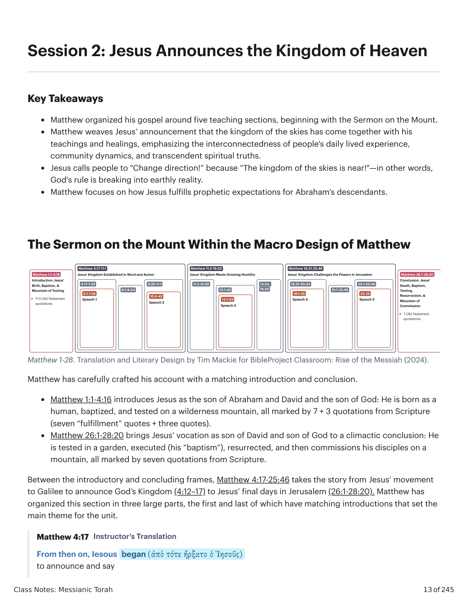
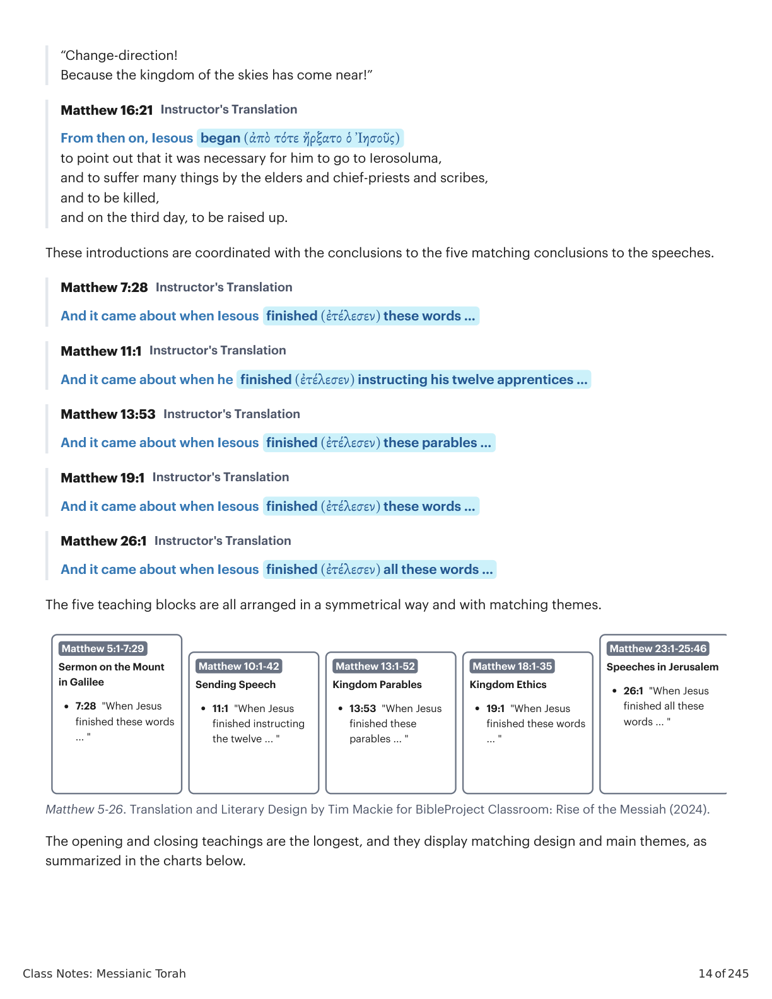
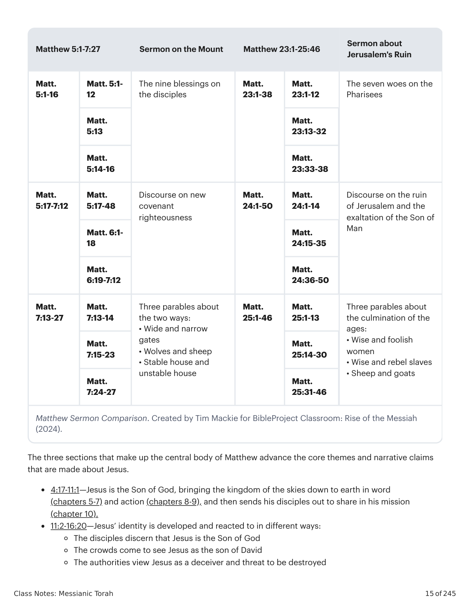
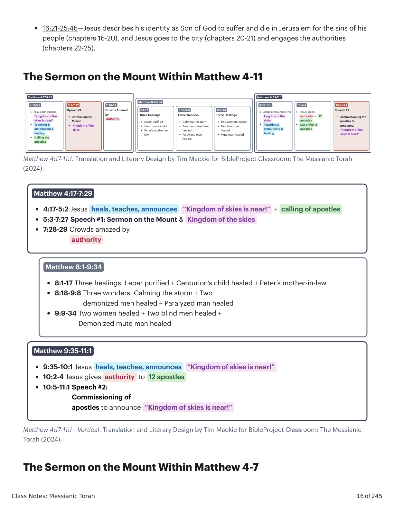
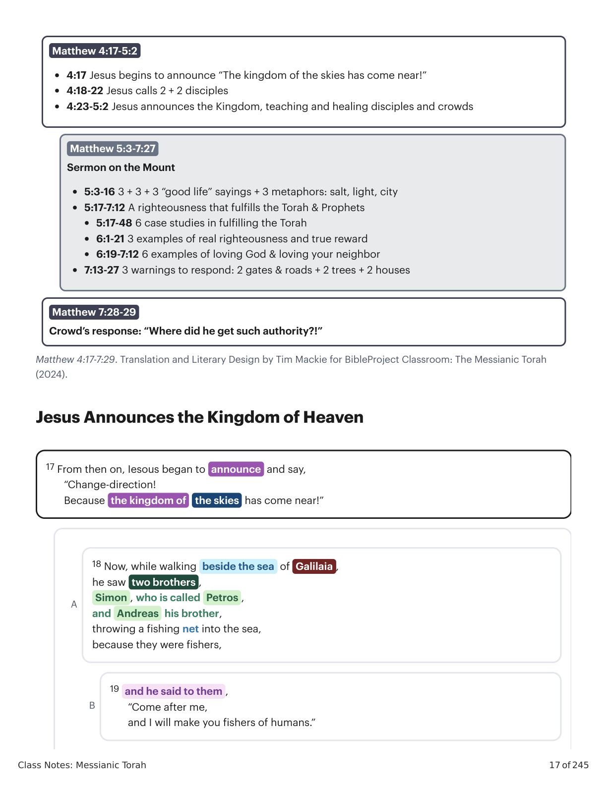
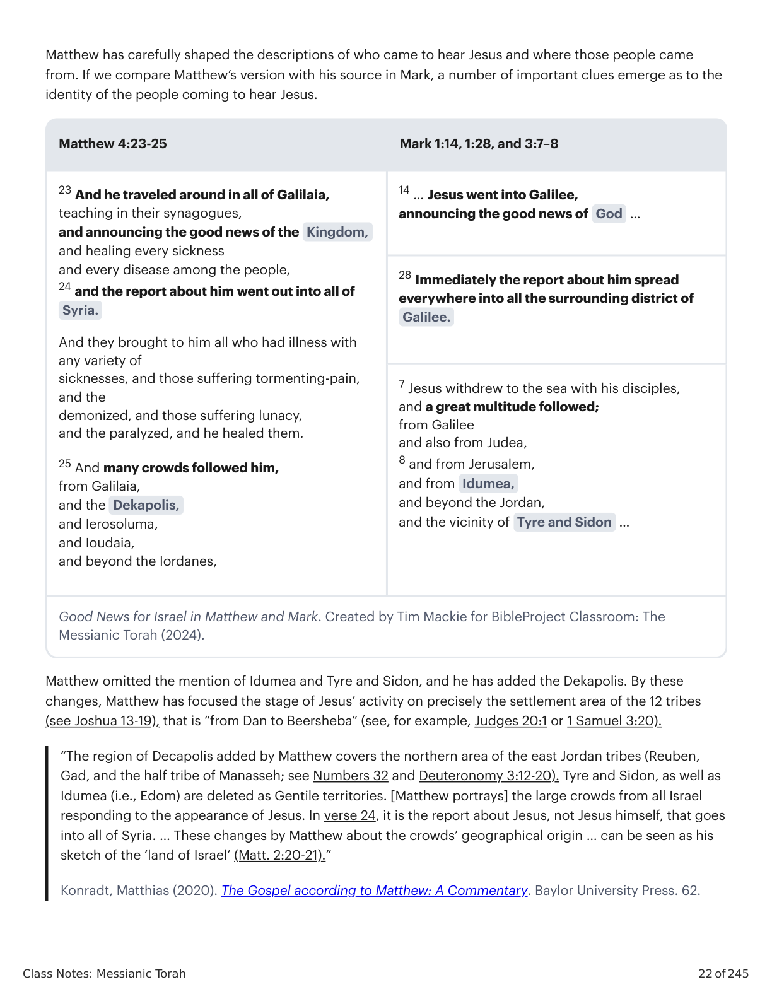
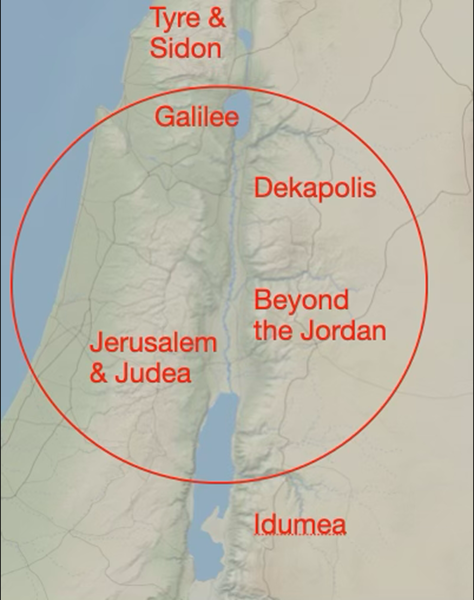
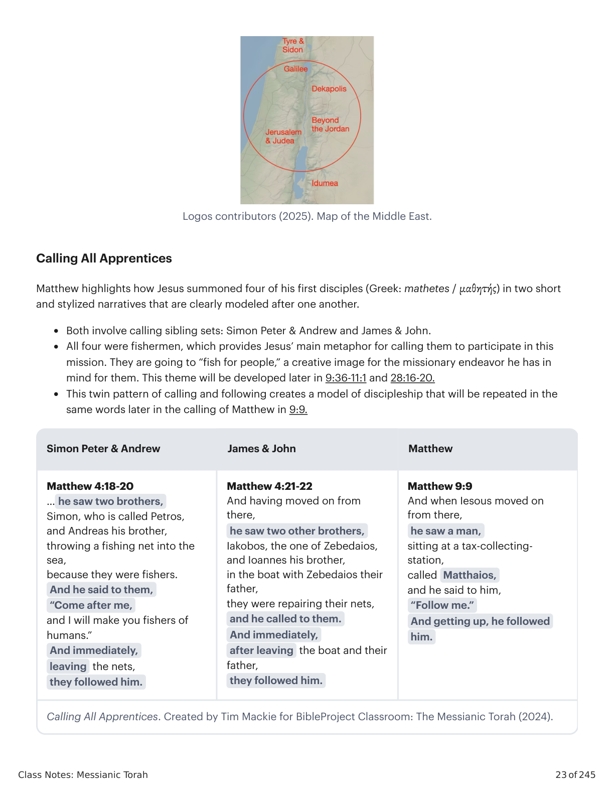
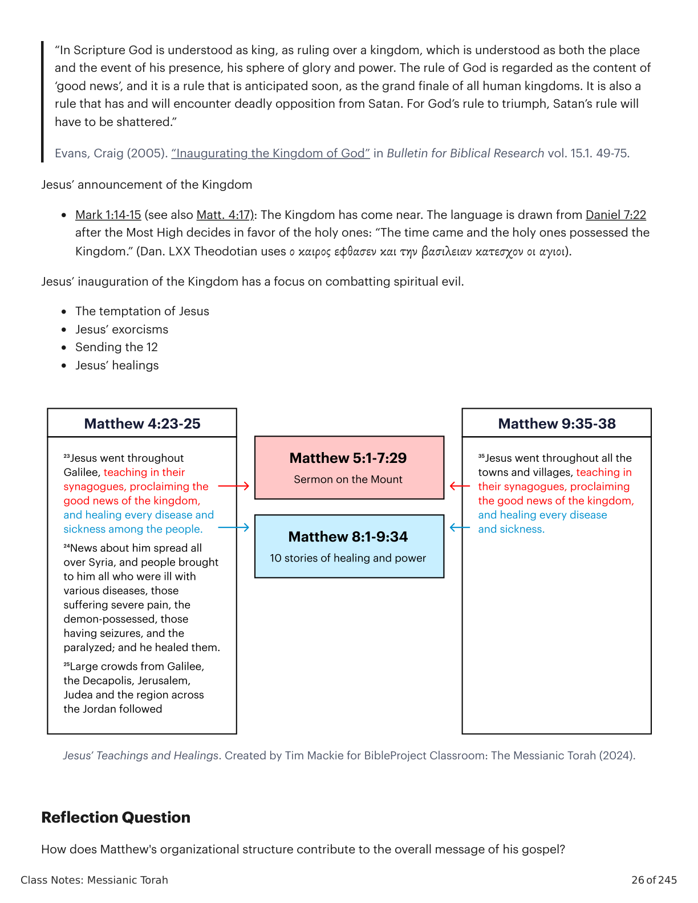

Sessão 2: Jesus Anuncia o Reino dos CéusSession 2: Jesus Announces the Kingdom of Heaven
Principais LiçõesKey Takeaways
- Mateus organizou seu evangelho em torno de cinco seções de ensino, começando com o Sermão do Monte.Matthew organized his gospel around five teaching sections, beginning with the Sermon on the Mount.
- Mateus entrelaça o anúncio de Jesus de que o reino dos céus chegou com seus ensinamentos e curas, enfatizando a interconexão da experiência vivida diariamente das pessoas, a dinâmica da comunidade e as verdades espirituais transcendentais.Matthew weaves Jesus’ announcement that the kingdom of the skies has come together with his teachings and healings, emphasizing the interconnectedness of people's daily lived experience, community dynamics, and transcendent spiritual truths.
- Jesus chama as pessoas a “Mudar de direção!” porque “O reino dos céus está próximo!”—em outras palavras, o governo de Deus está irrompendo na realidade terrena.Jesus calls people to "Change direction!” because “The kingdom of the skies is near!"—in other words, God's rule is breaking into earthly reality.
- Mateus foca em como Jesus cumpre as expectativas proféticas para os descendentes de Abraão.Matthew focuses on how Jesus fulfills prophetic expectations for Abraham's descendants.
O Sermão do Monte Dentro do Macro Design de MateusThe Sermon on the Mount Within the Macro Design of Matthew

Mateus 1-28. Tradução e Design Literário por Tim Mackie para BibleProject Classroom: Ascensão do Messias (2024).Matthew 1-28. Translation and Literary Design by Tim Mackie for BibleProject Classroom: Rise of the Messiah (2024).
Mateus elaborou cuidadosamente seu relato com uma introdução e conclusão correspondentes.Matthew has carefully crafted his account with a matching introduction and conclusion.
Mateus 1:1-4:16 apresenta Jesus como o filho de Abraão e Davi e o filho de Deus: Ele nasce como humano, é batizado e provado em uma montanha no deserto, tudo marcado por 7 + 3 citações das Escrituras (sete citações de “cumprimento” + três citações).Matthew 1:1-4:16 introduces Jesus as the son of Abraham and David and the son of God: He is born as a human, baptized, and tested on a wilderness mountain, all marked by 7 + 3 quotations from Scripture (seven “fulfillment” quotes + three quotes).
Mateus 26:1-28:20 leva a vocação de Jesus como filho de Davi e filho de Deus a uma conclusão climática: Ele é provado em um jardim, executado (seu “batismo”), ressuscitado, e então comissiona seus discípulos em uma montanha, tudo marcado por sete citações das Escrituras.Matthew 26:1-28:20 brings Jesus’ vocation as son of David and son of God to a climactic conclusion: He is tested in a garden, executed (his “baptism”), resurrected, and then commissions his disciples on a mountain, all marked by seven quotations from Scripture.
Entre os quadros introdutório e conclusivo, Mateus 4:17-25:46 leva a história do movimento de Jesus para a Galileia para anunciar o Reino de Deus (4:12-17) até os dias finais de Jesus em Jerusalém (26:1-28:20). Mateus organizou esta seção em três grandes partes, a primeira e a última das quais têm introduções correspondentes que estabelecem o tema principal para a unidade.Between the introductory and concluding frames, Matthew 4:17-25:46 takes the story from Jesus’ movement to Galilee to announce God’s Kingdom (4:12–17) to Jesus’ final days in Jerusalem (26:1-28:20). Matthew has organized this section in three large parts, the first and last of which have matching introductions that set the main theme for the unit.
Mateus 4:17Matthew 4:17Tradução do InstrutorInstructor's Translation
Desde então, Iesous começou (ἀπὸ τότε ἤρξατο ὁ Ἰησοῦς)
a anunciar e dizerFrom then on, Iesous began (ἀπὸ τότε ἤρξατο ὁ Ἰησοῦς)
to announce and say

Mateus 5-26. Tradução e Design Literário por Tim Mackie para BibleProject Classroom: Ascensão do Messias (2024).Matthew 5-26. Translation and Literary Design by Tim Mackie for BibleProject Classroom: Rise of the Messiah (2024).
“Mudar de direção!
Porque o reino dos céus se aproximou!”“Change-direction!
Because the kingdom of the skies has come near!”
Mateus 16:21Matthew 16:21Tradução do InstrutorInstructor's Translation
Desde então, Iesous começou (ἀπὸ τότε ἤρξατο ὁ Ἰησοῦς)
a apontar que era necessário para ele ir a Ierosoluma,
e sofrer muitas coisas pelas mãos dos anciãos, principais sacerdotes e escribas,
e ser morto,
e no terceiro dia, ser levantado.From then on, Iesous began (ἀπὸ τότε ἤρξατο ὁ Ἰησοῦς)
to point out that it was necessary for him to go to Ierosoluma,
and to suffer many things by the elders and chief-priests and scribes,
and to be killed,
and on the third day, to be raised up.
Estas introduções são coordenadas com as conclusões das cinco conclusões correspondentes dos discursos.These introductions are coordinated with the conclusions to the five matching conclusions to the speeches.
Mateus 7:28Matthew 7:28Tradução do InstrutorInstructor's Translation
E aconteceu que, quando Iesous terminou (ἐτέλεσεν) estas palavras …And it came about when Iesous finished (ἐτέλεσεν) these words …
Mateus 11:1Matthew 11:1Tradução do InstrutorInstructor's Translation
E aconteceu que, quando ele terminou (ἐτέλεσεν) de instruir seus doze aprendizes …And it came about when he finished (ἐτέλεσεν) instructing his twelve apprentices …
Mateus 13:53Matthew 13:53Tradução do InstrutorInstructor's Translation
E aconteceu que, quando Iesous terminou (ἐτέλεσεν) estas parábolas …And it came about when Iesous finished (ἐτέλεσεν) these parables …
Mateus 19:1Matthew 19:1Tradução do InstrutorInstructor's Translation
E aconteceu que, quando Iesous terminou (ἐτέλεσεν) estas palavras …And it came about when Iesous finished (ἐτέλεσεν) these words …
Mateus 26:1Matthew 26:1Tradução do InstrutorInstructor's Translation
E aconteceu que, quando Iesous terminou (ἐτέλεσεν) todas estas palavras …And it came about when Iesous finished (ἐτέλεσεν) all these words …
Os cinco blocos de ensino são todos dispostos de maneira simétrica e com temas correspondentes.The five teaching blocks are all arranged in a symmetrical way and with matching themes.

Comparação do Sermão de Mateus. Criado por Tim Mackie para BibleProject Classroom: Ascensão do Messias (2024).Matthew Sermon Comparison. Created by Tim Mackie for BibleProject Classroom: Rise of the Messiah (2024).
As três seções que compõem o corpo central de Mateus avançam os temas centrais e as afirmações narrativas que são feitas sobre Jesus.The three sections that make up the central body of Matthew advance the core themes and narrative claims that are made about Jesus.
- 4:17-11:1—Jesus é o Filho de Deus, trazendo o reino dos céus para baixo à terra em palavra (capítulos 5-7) e ação (capítulos 8-9), e então envia seus discípulos para participar de sua missão (capítulo 10).4:17-11:1—Jesus is the Son of God, bringing the kingdom of the skies down to earth in word (chapters 5-7) and action (chapters 8-9), and then sends his disciples out to share in his mission (chapter 10).
- 11:2-16:20—A identidade de Jesus é desenvolvida e reage-se a ela de diferentes maneiras:11:2-16:20—Jesus’ identity is developed and reacted to in different ways:
- Os discípulos discernem que Jesus é o Filho de DeusThe disciples discern that Jesus is the Son of God
- As multidões passam a ver Jesus como o filho de DaviThe crowds come to see Jesus as the son of David
- As autoridades veem Jesus como um enganador e uma ameaça a ser destruídaThe authorities view Jesus as a deceiver and threat to be destroyed
- 16:21-25:46—Jesus descreve sua identidade como Filho de Deus para sofrer e morrer em Jerusalém pelos pecados do seu povo (capítulos 16-20), e Jesus vai à cidade (capítulos 20-21) e confronta as autoridades (capítulos 22-25).16:21-25:46—Jesus describes his identity as Son of God to suffer and die in Jerusalem for the sins of his people (chapters 16-20), and Jesus goes to the city (chapters 20-21) and engages the authorities (chapters 22-25).
O Sermão do Monte Dentro de Mateus 4-11The Sermon on the Mount Within Matthew 4-11

Mateus 4:17-11:1. Tradução e Design Literário por Tim Mackie para BibleProject Classroom: Torá Messiânica (2024).Matthew 4:17-11:1. Translation and Literary Design by Tim Mackie for BibleProject Classroom: The Messianic Torah (2024).
O Sermão do Monte Dentro de Mateus 4-7The Sermon on the Mount Within Matthew 4-7

Mateus 4:17-7:29. Tradução e Design Literário por Tim Mackie para BibleProject Classroom: Torá Messiânica (2024).Matthew 4:17-7:29. Translation and Literary Design by Tim Mackie for BibleProject Classroom: The Messianic Torah (2024).
Jesus Anuncia o Reino dos CéusJesus Announces the Kingdom of Heaven
Mateus 4:17-5:2Matthew 4:17-5:2Tradução do InstrutorInstructor's Translation
17 Desde então, Iesous começou a anunciar e dizer,
“Mudar de direção!
Porque o reino dos céus se aproximou!”17 From then on, Iesous began to announce and say,
“Change-direction!
Because the kingdom of the skies has come near!”
A
18 Ora, enquanto caminhava junto ao mar da Galilaia,
ele viu dois irmãos,
Simão, que é chamado Petros,
e Andreas, seu irmão,
lançando uma rede de pesca ao mar,
porque eram pescadores,A
18 Now, while walking beside the sea of Galilaia,
he saw two brothers,
Simon, who is called Petros,
and Andreas his brother,
throwing a fishing net into the sea,
because they were fishers,
B
19 e ele lhes disse,
“Vinde após mim,
e eu vos farei pescadores de humanos.”B
19 and he said to them,
“Come after me,
and I will make you fishers of humans.”
C
20 E imediatamente, deixando as redes,
eles o seguiram.C
20 And immediately, leaving the nets,
they followed him.
A'
21 E tendo partido dali,
ele viu dois outros irmãos,
Iakobos, o de Zebedaios,
e Ioannes, seu irmão,
no barco com Zebedaios, seu pai,
consertavam suas redes,A'
21 And having moved on from there,
he saw two other brothers,
Iakobos, the one of Zebedaios,
and Ioannes his brother,
in the boat with Zebedaios their father,
they were repairing their nets,
B'
e ele os chamou,B'
and he called to them,
C'
22 e imediatamente, depois de deixar o barco e seu pai,
eles o seguiram.C'
22 and immediately, after leaving the boat and their father,
they followed him.
23 E ele percorreu toda a Galilaia,
ensinando nas sinagogas deles,
e anunciando as boas novas do Reino,
e curando toda doença e toda enfermidade entre o povo.23 And he traveled around in all of Galilaia,
teaching in their synagogues,
and announcing the good news of the Kingdom,
and healing every sickness and every disease among the people.
24 E a notícia sobre ele se espalhou por toda a Síria,
e trouxeram a ele
todos os que tinham doença com qualquer variedade de enfermidades,
e os que sofriam de dores atormentadoras,
e os endemoninhados,
e os que sofriam de loucura,
e os paralíticos,
e ele os curou.24 And the report about him went out into all of Syria,
and they brought to him
all who had illness with any variety of sicknesses,
and those suffering tormenting-pain,
and the demonized,
and those suffering lunacy,
and the paralyzed,
and he healed them.
25 E muitas multidões
o seguiram,
da Galilaia,
e da Dekapolis,
e de Ierosoluma,
e de Ioudaia,
e de além do Iordanes,
5:1 e, vendo as multidões, subiu ao monte,
e, sentando-se, seus discípulos vieram a ele,
2 e abrindo sua boca, ele os ensinou, dizendo,25 And many crowds
followed him,
from Galilaia,
and the Dekapolis,
and Ierosoluma,
and Ioudaia,
and beyond the Iordanes,
5:1 and, seeing the crowds, he went up onto the mountain,
and sitting down, his disciples came to him,
2 and opening his mouth, he taught them, saying,
O Fundo Bíblico do Reino de DeusScriptural Background to the Kingdom of God
O “Reino de Deus” era o tema principal no ensino de Jesus. Ele afirmou que em suas ações, o Reino de Deus estava realmente se tornando realidade aqui na terra.The “Kingdom of God” was the main theme in Jesus’ teaching. He claimed that in his actions, God’s Kingdom was actually becoming reality here on earth.
- Marcos 1:15—“O Reino de Deus chegou.”Mark 1:15—“The Kingdom of God has arrived.”
- Mateus 12:28—“Ei, todo mundo, Deus agora está começando a comandar o show!”Matthew 12:28—“Hey everyone, God is now starting to run the show!”
Na Bíblia Hebraica, o “Reino” de Deus se refere ao domínio e autoridade de Deus. Em um sentido, toda a criação é o Reino de Deus.In the Hebrew Bible, the “Kingdom” of God refers to God’s realm of dominion and authority. In one sense, all of creation is God’s Kingdom.
Salmo 103:19Psalm 103:19Tradução do InstrutorInstructor's Translation
O Senhor estabeleceu o seu trono nos céus,
e o seu reino domina sobre tudo.The Lord has established his throne in the skies,
and his kingdom rules over all.
Salmo 145:10-13Psalm 145:10–13NASB
Todas as tuas obras te darão graças, ó SENHOR, e os teus fiéis te bendirão.
Falarão da glória do teu reino e contarão do teu poder;
para fazer conhecidos aos filhos dos homens os teus atos poderosos e a glória da majestade do teu reino.
O teu reino é um reino eterno, e o teu domínio dura por todas as gerações.All your works shall give thanks to you, O LORD, and your godly ones shall bless you.
They shall speak of the glory of your kingdom and talk of your power;
to make known to the sons of men your mighty acts and the glory of the majesty of your kingdom.
Your kingdom is an everlasting kingdom, and your dominion endures throughout all generations.
Daniel 4:2-3Daniel 4:2–3NASB
Pareceu-me bem declarar os sinais e maravilhas que o Deus Altíssimo fez por mim.
Quão grandes são os seus sinais e quão poderosas as suas maravilhas! O seu reino é um reino eterno, e o seu domínio é de geração em geração.It has seemed good to me to declare the signs and wonders which the Most High God has done for me.
How great are his signs and how mighty are his wonders! His kingdom is an everlasting kingdom and his dominion is from generation to generation.
Daniel 4:34Daniel 4:34NASB
Mas, no fim daquele período, eu, Nabucodonosor, levantei os olhos para o céu e o meu entendimento voltou a mim, e abençoei o Altíssimo e louvei e honrei aquele que vive para sempre; pois o seu domínio é um domínio eterno, e o seu reino dura de geração em geração.But at the end of that period, I, Nebuchadnezzar, raised my eyes toward heaven and my reason returned to me, and I blessed the Most High and praised and honored him who lives forever; for his dominion is an everlasting dominion, and his kingdom endures from generation to generation.
Nota: “Reino de Deus/Céus” não significa “ir para o céu.” É exatamente o oposto, um anúncio de que o espaço de Deus está entrando em contato com o nosso espaço.Note: “Kingdom of God/Heaven” does not mean “going to heaven.” It is just the opposite, an announcement that God’s space is coming into contact with our space.
Referências ao “Reino” e à “vontade” de Deus sugerem a ideia, “Como seria se Deus estivesse comandando este show?” Essas ideias evocam o mundo como o criador pretendia que fosse, e quer que seja novamente: um lugar de shalom, justiça, abundância, comunidade, etc.References to God’s “Kingdom” and “will” suggest the idea, “What would it look like if God was running this show?” These ideas evoke the world as the creator intended it to be, and wants it to be again: a place of shalom, justice, abundance, community, etc.
Os autores bíblicos usam o termo “nova/criada de novo criação” para falar desta esperança futura (Rom. 8:18-23; 21-22), e de como esta esperança futura começou a infiltrar o presente (2 Cor. 5:17).The biblical authors use the term “new/renewed creation” to speak of this future hope (Rom. 8:18-23; 21-22), and of how this future hope has begun to infiltrate the present (2 Cor. 5:17).
A ideia do reinado celestial de Deus se tornando realidade na terra é sobre o que trata Daniel 7.The idea of God’s heavenly reign becoming realized on earth is what Daniel 7 is all about.
Daniel 7:13-14Daniel 7:13–14Tradução do InstrutorInstructor's Translation
Eu continuei olhando nas visões noturnas,
e eis que, com as nuvens do céu
vinha alguém como um Filho de Homem,
e ele chegou ao Ancião de Dias
e foi apresentado diante dele.
E a ele foi dado o domínio (שָׁלְטָן),
glória e um reino (מַלְכוּ),
para que todos os povos, nações e homens de toda língua
o servissem.
O seu domínio é um domínio eterno
que não passará;
e o seu Reino é um
que não será destruído.I kept looking in the night visions,
and behold, with the clouds of heaven
one like a Son of Man was coming,
and he came up to the Ancient of Days
and was presented before him.
And to him was given dominion (שָׁלְטָן),
glory and a kingdom (מַלְכוּ),
that all the peoples, nations, and men of every language
might serve him.
His dominion is an everlasting dominion
which will not pass away;
and his Kingdom is one
which will not be destroyed.
Daniel 7:18Daniel 7:18Tradução do InstrutorInstructor's Translation
Mas os santos do Altíssimo receberão o Reino
e possuirão o Reino para sempre,
por todas as eras vindouras.But the saints of the Highest One will receive the Kingdom
and possess the Kingdom forever,
for all ages to come.
Daniel 7:27Daniel 7:27NASB*
Então a soberania, o domínio e a grandeza de todos os reinos debaixo de todo o céu serão dados ao povo dos santos do Altíssimo; o seu reino será um reino eterno, e todos os domínios o servirão e obedecerão a Ele.Then the sovereignty, the dominion and the greatness of all the kingdoms under the whole heaven will be given to the people of the saints of the Highest One; his kingdom will be an everlasting kingdom, and all the dominions will serve and obey Him.
*Palavras-chave Adaptadas pelo Professor*Key Words Adapted by Teacher
No Evangelho de Mateus, a história começa com um conflito de reinos, como os três primeiros usos da palavra deixam claro.In the Gospel of Matthew, the story begins with a conflict of kingdoms, as the first three uses of the word make clear.
Mateus 3:1-2Matthew 3:1–2Tradução do InstrutorInstructor's Translation
Naqueles dias veio João Batista, pregando no deserto da Judeia, dizendo,
“Arrependei-vos, pois o reino dos céus se aproximou.”Now in those days John the Baptist came, preaching in the wilderness of Judea, saying,
“Repent, for the kingdom of the skies has come near.”
Mateus 4:8-9Matthew 4:8–9Tradução do InstrutorInstructor's Translation
Novamente, o difamador o levou a um monte muito alto e mostrou-lhe todos os reinos do mundo e a sua glória; e disse-lhe: “Todas estas coisas eu te darei, se te prostrares e me adorares.”Again, the slanderer took him to a very high mountain and showed him all the kingdoms of the world and their glory; and he said to him, “All these things I will give you, if you fall down and worship me.”
Mateus 4:17Matthew 4:17Tradução do InstrutorInstructor's Translation
Desde aquele tempo Jesus começou a pregar e dizer: “Arrependei-vos, pois o reino dos céus está próximo.”From that time Jesus began to preach and say, “Repent, for the kingdom of the skies is at hand.”
A palavra “reino” (grego: basilea) ocorre 55 vezes no relato de Mateus sobre o ensino de Jesus e é usada de várias maneiras. Jesus apresenta o Reino de Deus como presente em e através de si mesmo, mas também como uma realidade futura.The word “kingdom” (Greek: basilea) occurs 55 times in Matthew’s account of Jesus’ teaching and is used in a variety of ways. Jesus presents the Kingdom of God as both present in and through himself, but also as a future reality.
Ditos em que Jesus apresenta o Reino dos Céus como realidade presente para si e para seus ouvintesSayings in which Jesus presents the Kingdom of Heaven as present reality for himself and his listeners
Mateus 4:17Matthew 4:17Tradução do InstrutorInstructor's Translation
Desde aquele tempo Jesus começou a pregar e dizer: “Arrependei-vos, pois o reino dos céus se aproximou.”From that time Jesus began to preach and say, “Repent, for the kingdom of the skies has come near.”
Mateus 10:6-7Matthew 10:6–7NASB*
mas antes ide às ovelhas perdidas da casa de Israel.
E, indo, pregai, dizendo: “O reino dos céus se aproximou.”but rather go to the lost sheep of the house of Israel.
And as you go, preach, saying, “The kingdom of the skies has come near.”
*Palavras-chave Adaptadas pelo Professor*Key Words Adapted by Teacher
Mateus 12:28Matthew 12:28NASB
Mas, se eu expulso demônios pelo Espírito de Deus, então o reino de Deus chegou sobre vós.But if I cast out demons by the Spirit of God, then the kingdom of God has come upon you.
Mateus 18:3-4Matthew 18:3–4NASB*
Em verdade vos digo que, a menos que vos convertais e vos torneis como crianças, não entrareis no reino dos céus. Quem, pois, se humilhar como esta criança, esse é o maior no reino dos céus.Truly I say to you, unless you are converted and become like children, you will not enter the kingdom of the skies. Whoever then humbles himself as this child, he is the greatest in the kingdom of the skies.
*Palavras-chave Adaptadas pelo Professor*Key Words Adapted by Teacher
Mateus 19:23-24Matthew 19:23–24NASB*
E Jesus disse aos seus discípulos: “Em verdade vos digo que é difícil para um rico entrar no reino dos céus. De novo vos digo: é mais fácil passar um camelo pelo fundo de uma agulha do que um rico entrar no reino de Deus.”And Jesus said to his disciples, “Truly I say to you, it is hard for a rich man to enter the kingdom of the skies. Again I say to you, it is easier for a camel to go through the eye of a needle, than for a rich man to enter the kingdom of God.”
*Palavras-chave Adaptadas pelo Professor*Key Words Adapted by Teacher
Mateus 21:31Matthew 21:31NIV
“Qual dos dois fez o que seu pai queria?” “O primeiro,” responderam. Jesus lhes disse: “Em verdade vos digo que os publicanos e as prostitutas entram no reino de Deus antes de vós.”“Which of the two did what his father wanted?” “The first,” they answered. Jesus said to them, “Truly I tell you, the tax collectors and the prostitutes are entering the kingdom of God ahead of you.”
Ditos em que Jesus apresenta o Reino como uma realidade futuraSayings in which Jesus presents the Kingdom as a future reality
Mateus 8:11Matthew 8:11Tradução do InstrutorInstructor's Translation
Eu vos digo que muitos virão do leste e do oeste, e se reclinarão à mesa com Abraão, Isaque e Jacó no reino dos céus;I say to you that many will come from east and west, and will recline at the table with Abraham, Isaac and Jacob in the kingdom of the skies;
Mateus 13:43Matthew 13:43NASB
Então os justos resplandecerão como o sol no reino de seu Pai. Quem tem ouvidos, ouça.Then the righteous will shine forth as the sun in the kingdom of their Father. He who has ears, let him hear.
Mateus 16:28Matthew 16:28NASB
Em verdade vos digo que há alguns dos que estão aqui que não provarão a morte até verem o Filho do Homem vindo no seu reino.Truly I say to you, there are some of those who are standing here who will not taste death until they see the Son of Man coming in his kingdom.
Mateus 26:27-29Matthew 26:27–29NASB
E, tendo tomado um cálice e dado graças, deu-lho, dizendo: “Bebei dele, todos vós;
pois isto é o meu sangue da aliança, que é derramado por muitos para remissão de pecados.
Mas eu vos digo que não beberei deste fruto da videira de agora em diante até aquele dia em que o beber novo convosco no reino de meu Pai.”And when he had taken a cup and given thanks, he gave it to them, saying, “Drink from it, all of you;
for this is my blood of the covenant, which is poured out for many for forgiveness of sins.
But I say to you, I will not drink of this fruit of the vine from now on until that day when I drink it new with you in my Father’s kingdom.”
Boas Novas para IsraelGood News for Israel
Mateus moldou cuidadosamente as descrições de quem veio ouvir Jesus e de onde essas pessoas vieram. Se compararmos a versão de Mateus com sua fonte em Marcos, uma série de pistas importantes emerge quanto à identidade das pessoas que vinham ouvir Jesus.Matthew has carefully shaped the descriptions of who came to hear Jesus and where those people came from. If we compare Matthew’s version with his source in Mark, a number of important clues emerge as to the identity of the people coming to hear Jesus.

Boas Novas para Israel em Mateus e Marcos. Criado por Tim Mackie para BibleProject Classroom: Torá Messiânica (2024).Good News for Israel in Matthew and Mark. Created by Tim Mackie for BibleProject Classroom: The Messianic Torah (2024).
Mateus omitiu a menção de Idumeia e Tiro e Sidom, e acrescentou a Decápolis. Com essas mudanças, Mateus focou o palco da atividade de Jesus precisamente na área de assentamento das 12 tribos (ver Josué 13-19), isto é, “de Dã a Berseba” (ver, por exemplo, Juízes 20:1 ou 1 Samuel 3:20).Matthew omitted the mention of Idumea and Tyre and Sidon, and he has added the Dekapolis. By these changes, Matthew has focused the stage of Jesus’ activity on precisely the settlement area of the 12 tribes (see Joshua 13-19), that is “from Dan to Beersheba” (see, for example, Judges 20:1 or 1 Samuel 3:20).
“A região da Decápolis acrescentada por Mateus cobre a área norte das tribos do leste do Jordão (Rúben, Gade e a meia tribo de Manassés; ver Números 32 e Deuteronômio 3:12-20). Tiro e Sidom, bem como Idumeia (isto é, Edom), são apagadas como territórios gentios. [Mateus retrata] as grandes multidões de todo o Israel respondendo à aparição de Jesus. No versículo 24, é a notícia sobre Jesus, não o próprio Jesus, que vai para toda a Síria. … Essas mudanças de Mateus quanto à origem geográfica das multidões … podem ser vistas como seu esboço da ‘terra de Israel’ (Mt. 2:20-21).”“The region of Decapolis added by Matthew covers the northern area of the east Jordan tribes (Reuben, Gad, and the half tribe of Manasseh; see Numbers 32 and Deuteronomy 3:12-20). Tyre and Sidon, as well as Idumea (i.e., Edom) are deleted as Gentile territories. [Matthew portrays] the large crowds from all Israel responding to the appearance of Jesus. In verse 24, it is the report about Jesus, not Jesus himself, that goes into all of Syria. … These changes by Matthew about the crowds’ geographical origin … can be seen as his sketch of the ‘land of Israel’ (Matt. 2:20-21).”
Konradt, Matthias (2020). The Gospel according to Matthew: A Commentary. Baylor University Press. 62.Konradt, Matthias (2020). The Gospel according to Matthew: A Commentary. Baylor University Press. 62.
Chamando Todos os AprendizesCalling All Apprentices

Colaboradores do Logos (2025). Mapa do Oriente Médio.Logos contributors (2025). Map of the Middle East.
Mateus destaca como Jesus convocou quatro de seus primeiros discípulos (grego: mathetes / μαθητής) em duas narrativas curtas e estilizadas que são claramente modeladas uma sobre a outra.Matthew highlights how Jesus summoned four of his first disciples (Greek: mathetes / μαθητής) in two short and stylized narratives that are clearly modeled after one another.
- Ambas envolvem chamar conjuntos de irmãos: Simão Pedro & André e Tiago & João.Both involve calling sibling sets: Simon Peter & Andrew and James & John.
- Todos os quatro eram pescadores, o que fornece a principal metáfora de Jesus para chamá-los a participar desta missão. Eles vão “pescar pessoas,” uma imagem criativa para o empreendimento missionário que ele tem em mente para eles. Este tema será desenvolvido mais tarde em 9:36-11:1 e 28:16-20.All four were fishermen, which provides Jesus’ main metaphor for calling them to participate in this mission. They are going to “fish for people,” a creative image for the missionary endeavor he has in mind for them. This theme will be developed later in 9:36-11:1 and 28:16-20.
- Este padrão gêmeo de chamar e seguir cria um modelo de discipulado que será repetido nas mesmas palavras mais tarde no chamado de Mateus em 9:9.This twin pattern of calling and following creates a model of discipleship that will be repeated in the same words later in the calling of Matthew in 9:9.

Chamando Todos os Aprendizes. Criado por Tim Mackie para BibleProject Classroom: Torá Messiânica (2024).Calling All Apprentices. Created by Tim Mackie for BibleProject Classroom: The Messianic Torah (2024).
Mateus moldou claramente estas três cenas para se espelharem umas nas outras. É provável que Mateus queira que vejamos algo normativo para sua audiência também: Se alguém é um aprendiz de Jesus, quando ele chama, devemos seguir.Matthew has clearly shaped these three scenes to mirror one another. It is likely that Matthew wants us to see something normative for his audience as well: If one is an apprentice of Jesus, when he calls, we are to follow.
O motivo é repetido no próprio relato do chamado de Mateus em 9:9.The motif is repeated in Matthew’s own call narrative in 9:9.
A Estratégia Composicional de Mateus em Mateus 4:23-25Matthew’s Compositional Strategy in Matthew 4:23-25
Mateus reuniu o resumo do ministério diário de Jesus a partir de múltiplos textos em sua fonte principal, o Evangelho segundo Marcos. Abaixo está uma tabela que ilustra o método composicional de Mateus em ação.Matthew has drawn together the summary of Jesus’ daily ministry from multiple texts in his main source, the Gospel according to Mark. Below is a table that illustrates Matthew’s compositional method at work.
| MateusMatthew | MarcosMark |
|---|
Mateus 4:23
E ele percorreu toda a Galilaia,
ensinando nas sinagogas deles,
e anunciando as boas novas do reino,
e curando toda enfermidade e toda doença entre o povo.Matthew 4:23
And he traveled around in all of Galilaia,
teaching in their synagogues,
and announcing the good news of the kingdom,
and healing every sickness and every disease among the people. | Marcos 1:39
E ele foi por toda a Galileia anunciando nas sinagogas deles e expulsando demônios.
Marcos 6:6
... e ele andava pelas aldeias ensinando.Mark 1:39
And he went into all Galilee announcing in their synagogues and casting out demons.
Mark 6:6
... and he was going around among the villages teaching. |
Mateus 4:24
E a notícia a respeito dele saiu por toda a Síria,
e trouxeram-lhe
todos os que sofriam de variadas enfermidades,
e os que padeciam dores atormentadoras,
e os endemoninhados,
e os lunáticos,
e os paralíticos,
e ele os curou.Matthew 4:24
And the report about him went out into all of Syria,
and they brought to him
all who had illness with any variety of sicknesses,
and those suffering tormenting-pain,
and the demonized,
and those suffering lunacy,
and the paralyzed,
and he healed them. | Marcos 1:28
Imediatamente a notícia a respeito dele espalhou-se por toda a região vizinha da Galileia.
Marcos 1:32-34
³² ... começaram a trazer-lhe todos os que estavam doentes e os endemoninhados ...
³⁴ E ele curou muitos que estavam doentes de várias enfermidades, e expulsou muitos demônios ...Mark 1:28
Immediately the report about him spread everywhere into all the surrounding district of Galilee.
Mark 1:32-34
³² ... they began bringing to him all who were ill and those who were demonized ...
³⁴ And he healed many who were ill with various diseases, and cast out many demons ... |
Mateus 4:25
E muitas multidões o seguiram,
da Galilaia,
e da Decápolis,
e de Jerusalém,
e da Judeia,
e dalém do Jordão.Matthew 4:25
And many crowds followed him,
from Galilaia,
and the Dekapolis,
and Ierosoluma,
and Ioudaia,
and beyond the Iordanes. | Marcos 3:7-8
Jesus retirou-se para o mar com seus discípulos,
e uma grande multidão da Galileia o seguiu;
e também da Judeia,
e de Jerusalém,
e da Idumeia,
e dalém do Jordão,
e das cercanias de Tiro e Sidom,
um grande número de pessoas, ouvindo tudo o que ele fazia, veio a ele.Mark 3:7-8
Jesus withdrew to the sea with his disciples,
and a great multitude from Galilee followed;
and also from Judea,
and from Jerusalem,
and from Idumea,
and beyond the Jordan,
and the vicinity of Tyre and Sidon,
a great number of people heard of all that he was doing and came to him. |
| A Estratégia Composicional de Mateus em 4:23-25. Criado por Tim Mackie para BibleProject Classroom: Torá Messiânica (2024).Matthew’s Compositional Strategy in 4:23-25. Created by Tim Mackie for BibleProject Classroom: The Messianic Torah (2024). |
Declarações de Yahweh como Rei de IsraelStatements of Yahweh as Israel’s king
- Êxodo 15:18 A conclusão do Cântico do Mar: Isto é significativo porque a primeira declaração de “Yahweh como rei” é sobre seu povo recém-redimido. A realeza de Deus é demonstrada quando escravos são libertados e o mal é confrontado.Exodus 15:18 The conclusion to the Song of the Sea: This is significant because the first statement of "Yahweh as king" is over his newly redeemed people. God’s kingship is demonstrated when slaves are freed and evil is confronted.
- Números 23:21 Este é o oráculo de Balaão.Numbers 23:21 This is Balaam's oracle.
- Deuteronômio 33:5 Uma recordação poética do Rei Yahweh vindo ao seu povo desde o Sinai.Deuteronomy 33:5 A poetic recollection of King Yahweh coming to his people from Sinai.
- Juízes 8:23 A recusa de Gideão em governar porque Yahweh governa sobre Israel.Judges 8:23 Gideon’s refusal to rule because Yahweh rules over Israel.
- 1 Samuel 12:12 Yahweh é rei de Israel, portanto sua exigência por um rei está cheia de motivos mistos.1 Samuel 12:12 Yahweh is king of Israel, therefore their demand for a king is full of mixed motives.
Desenvolvimentos proféticosProphetic developments
- Isaías:
- Ele vê o rei Yahweh no templo (Isa. 6:5).
- Ele retrata Yahweh como rei e governante de Israel (33:22).
- Em Isaías 40-55, Yahweh é rei e redentor (41:21; 44:6).
- O anúncio de boas novas está diretamente conectado a Yahweh como rei (52:7).
- O apocalipse de Isaías em 24:21-23 tem uma cena onde Yahweh derrota reis rebeldes na terra e os exércitos do céu lançando-os todos em um poço, e Yahweh se torna rei em Jerusalém.
- Isto é chave: Em Isaías, as boas novas são que Deus está presente (40:9) e que Deus é rei (52:7).
Isaiah:- He sees king Yahweh in the temple (Isa. 6:5).
- He depicts Yahweh as king and ruler of Israel (33:22).
- In Isaiah 40-55, Yahweh is king and redeemer (41:21; 44:6).
- The announcement of good news is directly connected to Yahweh as king (52:7).
- The apocalypse of Isaiah in 24:21-23 has a scene where Yahweh defeats rebellious kings on earth and the hosts of heaven by throwing them all in a pit, and Yahweh becomes king in Jerusalem.
- This is key: In Isaiah, the good news is that God is present (40:9) and that God is king (52:7).
- Jeremias retrata Yahweh como o único e exclusivo rei (Jer. 10:6-7, 10) em contraste com os ídolos.Jeremiah depicts Yahweh as the one and only king (Jer. 10:6-7, 10) in contrast to idols.
- Zacarias descreve uma visão de Yahweh como rei universal (Zac. 14:9, 16).Zechariah describes a vision of Yahweh as universal king (Zech. 14:9, 16).
A realeza de Yahweh nos SalmosYahweh’s kingship in the Psalms
- Representação totalmente completa de Yahweh como rei: Ele se assenta em um trono (29:10, 47:8); usa vestes e mantos reais (93:1); seu trono está sobre a arca no templo (99:1); como rei ele traz justiça aos pobres (74:12, 96:10); Sião é sua cidade capital com seu templo (48:2).Fully complete depiction of Yahweh as king: He sits on a throne (29:10, 47:8); he wears royal garb and robes (93:1); his throne is over the ark in the temple (99:1); as king he brings justice to the poor (74:12, 96:10); Zion is his capital city with its temple (48:2).
O governo de Yahweh está conectado com “boas novas”Yahweh’s rule is connected with “good news”
- Isaías 40:3 e depois 52:7 são chave aqui. Yahweh vem para resgatar, salvar e tornar-se rei. Isto são boas novas.Isaiah 40:3 and then 52:7 are key here. Yahweh is coming to rescue, save, and become king. This is good news.
- A representação do Reino de Deus em Daniel o eleva a um nível cósmico:
- A luta do Reino de Deus contra o mal está ligada à luta do reino de Israel contra seus opressores (Isa. 10:13-14).
- Isto está ligado à tradição que começa em Deuteronômio 32:8-9 onde Yahweh governa Israel, mas outras nações têm outros deuses os governando; Daniel 10:13-14 liga o príncipe da Pérsia com forças espirituais malignas.
- Isto é chave: Em Daniel e Isaías 24, temos os únicos dois lugares onde o conflito do Reino de Deus é com forças do mal por trás dos reinos humanos. Esses temas são significativamente desenvolvidos em outra literatura do Segundo Templo: Jubileus, 1 Enoque e Os Testamentos dos Doze Patriarcas.
Daniel’s depiction of God’s Kingdom elevates it to a cosmic level:- The struggle of God’s Kingdom against evil is linked to the struggle of Israel’s kingdom against its oppressors (Isa. 10:13-14).
- This is linked to the tradition that begins in Deuteronomy 32:8-9 where Yahweh rules Israel, but other nations have other gods ruling them; Daniel 10:13-14 links the prince of Persia with evil spiritual forces.
- This is key: In Daniel and Isaiah 24, we have the only two places where the conflict of God’s Kingdom is with forces of evil behind human kingdoms. These themes are significantly developed in other Second Temple literature: Jubilees, 1 Enoch, and The Testaments of the Twelve Patriarchs.
“Na Escritura, Deus é entendido como rei, como governando sobre um reino, que é entendido tanto como o lugar quanto o evento de sua presença, sua esfera de glória e poder. O governo de Deus é considerado o conteúdo das ‘boas novas’, e é um governo que se espera em breve, como o grande final de todos os reinos humanos. É também um governo que tem e encontrará oposição mortal de Satanás. Para o governo de Deus triunfar, o governo de Satanás terá que ser despedaçado.”“In Scripture God is understood as king, as ruling over a kingdom, which is understood as both the place and the event of his presence, his sphere of glory and power. The rule of God is regarded as the content of ‘good news’, and it is a rule that is anticipated soon, as the grand finale of all human kingdoms. It is also a rule that has and will encounter deadly opposition from Satan. For God’s rule to triumph, Satan’s rule will have to be shattered.”
Evans, Craig (2005). “Inaugurating the Kingdom of God” in Bulletin for Biblical Research vol. 15.1. 49-75.Evans, Craig (2005). “Inaugurating the Kingdom of God” in Bulletin for Biblical Research vol. 15.1. 49-75.
O anúncio do Reino por JesusJesus’ announcement of the Kingdom
Marcos 1:14-15 (ver também Mt. 4:17): O Reino se aproximou. A linguagem é tirada de Daniel 7:22 depois que o Altíssimo decide a favor dos santos: “Chegou o tempo e os santos possuíram o Reino.” (Dan. LXX Teodocião usa ο καιρος εφθασεν και την βασιλειαν κατεσχον οι αγιοι).Mark 1:14-15 (see also Matt. 4:17): The Kingdom has come near. The language is drawn from Daniel 7:22 after the Most High decides in favor of the holy ones: “The time came and the holy ones possessed the Kingdom.” (Dan. LXX Theodotian uses ο καιρος εφθασεν και την βασιλειαν κατεσχον οι αγιοι).
A inauguração do Reino por Jesus tem um foco em combater o mal espiritual.Jesus’ inauguration of the Kingdom has a focus on combatting spiritual evil.

Ensinos e Curas de Jesus. Criado por Tim Mackie para BibleProject Classroom: Torá Messiânica (2024).Jesus’ Teachings and Healings. Created by Tim Mackie for BibleProject Classroom: The Messianic Torah (2024).
- A tentação de JesusThe temptation of Jesus
- Os exorcismos de JesusJesus’ exorcisms
- Enviando os 12Sending the 12
- As curas de JesusJesus’ healings
Pergunta de ReflexãoReflection Question
Como a estrutura organizacional de Mateus contribui para a mensagem geral de seu evangelho?How does Matthew's organizational structure contribute to the overall message of his gospel?